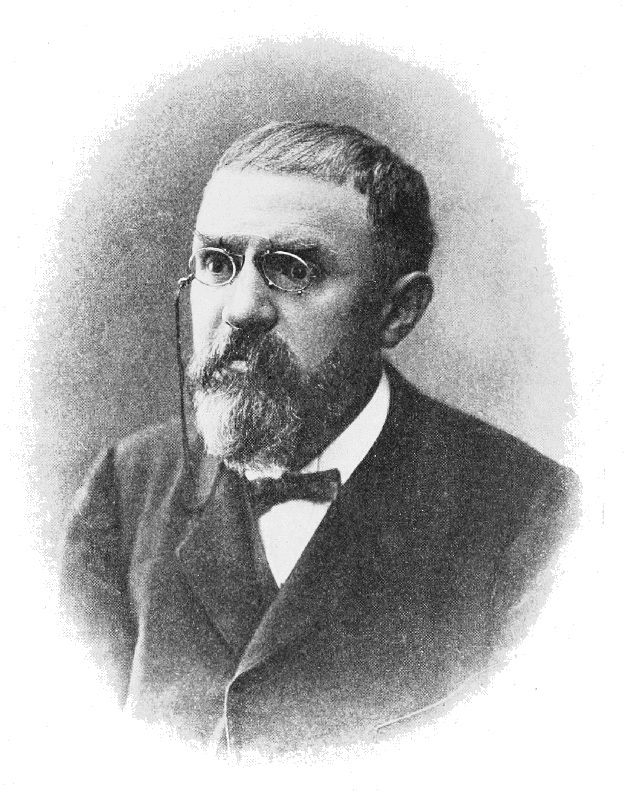

This is an open source page containing some texts of courses in mathematics.

Henri Poincaré(1854-1912), French Mathematician
"Mathematics is the art of giving the same name to different things."
The author and owner of this page is Zheng Wai Hong, a second-year undergraduate student in the School of Mathematical Sciences at Zhejiang University. You can contact Zheng via the following email: waihongzhg@gmail.com.
To date, Zheng has acquired a foundational knowledge of Python, LaTeX, and HTML. In mathematics, Zheng has completed courses in Mathematical Analysis, Linear Algebra, Abstract Algebra, Analytic Geometry, General Topology, and Ordinary Differential Equations. This semester, Zheng is taking Real Analysis, Differential Geometry, and Complex Analysis. Zheng speaks Cantonese, Mandarin, and English.
As an undergraduate student deeply obsessed with mathematics, Zheng noticed that most college-level math textbooks are disorganized to such an extent that many students—himself included—find them difficult to follow. This prompted Zheng to build a website for professional mathematical education, one that offers unified notations, clear logical flow, and easy access. The idea was indeed inspired by MIT OpenCourseWare, an open platform providing educational materials from the Massachusetts Institute of Technology (MIT).
This website is open source, and the original codes and contents will be stored in the corresponding GitHub repository: https://github.com/zhengwhyukfaan-ben/mathstudyingtexts.git.
The contents of the texts are planned to be in both Chinese and English. And, the studying texts would be presented by both html and LaTeX so that readers can download the texts.
Currently, Zheng is the sole developer, which presents significant challenges for a project of this scale. If you share an interest in this project, please do not hesitate to contact Zheng. For developing the website, I need partners who are proficient in coding, such as JavaScript, C, Python, etc. And for the contents, I also need the scholars in mathematics.